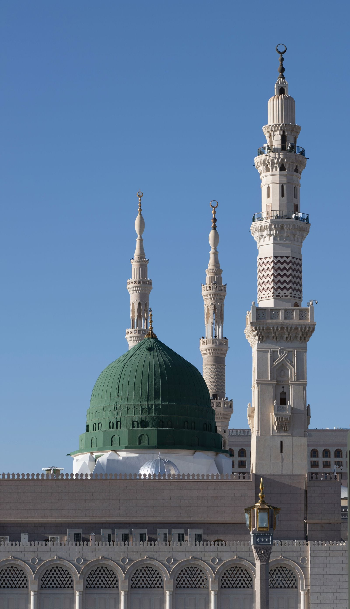

Home / Places of InterestTwo sacred cities.
PLACES OF INTEREST · ZIARAH
Two sacred cities.
So much to discover.
Explore the landmarks of Makkah and Madinah, and make space to reflect along the way.
Explore the landmarks01 / MAKKAH02 / MADINAH

Al Masjid An Nabawi, MadinahA CLOSER LOOK
Places with
a story to tell.
Browse Al Eiman’s collection of landmarks.
Select a city to explore.
Showing all 9 landmarks
Inside the Ka’bah
Hajar al-Aswad
Masjid-e-Nabwi
Rawdah Mubarak
The Sacred Chamber
House of Fatima
May Allah be pleased with her
Multazam
Riadhul Jannah and mehrab
Door of the Ka’bah
LANDMARK RESOURCES
A little guidance.
A deeper connection.
Explore the places featured in Al Eiman’s Makkah and Madinah collections, grouped by city.
Makkah Landmarks
Explore the Makkah collection.
Madinah Landmarks
Explore the Madinah collection.
HERE TO HELP YOU PREPARE
Your journey begins
with a conversation.
A question about planning your Umrah?
Speak to Al Eiman. We’d love to help.